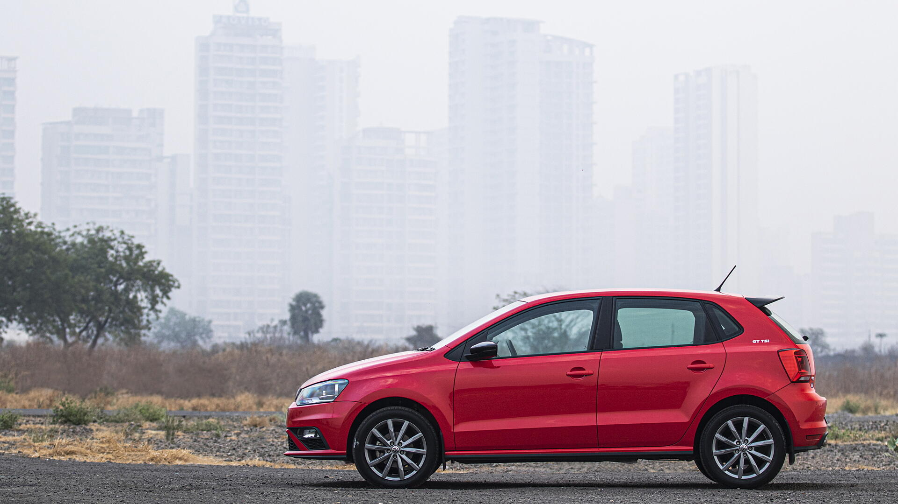

Volkswagen (German pronunciation: [ˈfɔlksˌvaːɡn̩] (listen)),[Note 1] abbreviated as VW ([faʊˈveː] (listen)), is a German automobile manufacturer headquartered in Wolfsburg, Lower Saxony, Germany. Founded in 1937 by the German Labour Front under the Nazi Party and revived into a global brand after World War II by the British Army officer Ivan Hirst, it is known for the iconic Beetle and serves as the flagship brand of the Volkswagen Group, the largest automotive manufacturer by worldwide sales in 2016 and 2017.[2] The group's biggest market is in China, which delivers 40 percent of its sales and profits.[3][4] Its name is derived from the German-language terms Volk and Wagen, translating to "people's car" when combined.
instagrampage learn more synnefo book service Volkswagen (German pronunciation: [ˈfɔlksˌvaːɡn̩] (listen)),[Note 1] abbreviated as VW ([faʊˈveː] (listen)), is a German automobile manufacturer headquartered in Wolfsburg, Lower Saxony, Germany
.hello......................................................!
welcome.....................................
hi.....................................
Volkswagen (German pronunciation: [ˈfɔlksˌvaːɡn̩] (listen)),[Note 1] abbreviated as VW ([faʊˈveː] (listen)), is a German automobile manufacturer headquartered in Wolfsburg, Lower Saxony, Germany. Founded in 1937 by the German Labour Front under the Nazi Party and revived into a global brand after World War II by the British Army officer Ivan Hirst, it is known for the iconic Beetle and serves as the flagship brand of the Volkswagen Group, the largest automotive manufacturer by worldwide sales in 2016 and 2017.[2] The group's biggest market is in China, which delivers 40 percent of its sales and profits.[3][4] Its name is derived from the German-language terms Volk and Wagen, translating to "people's car" when combined.